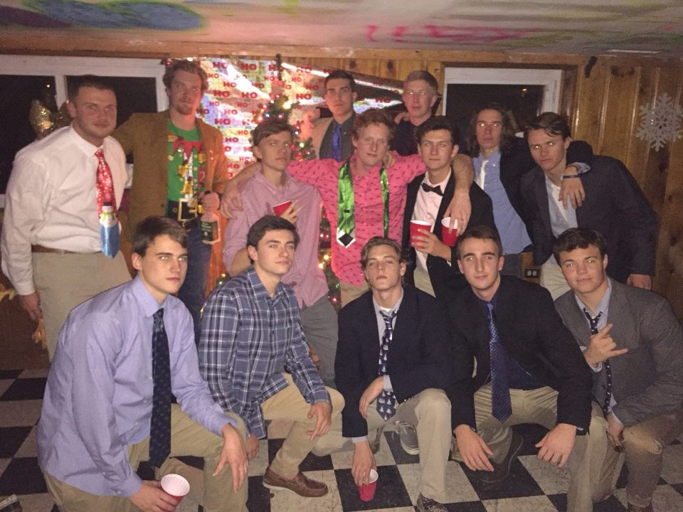
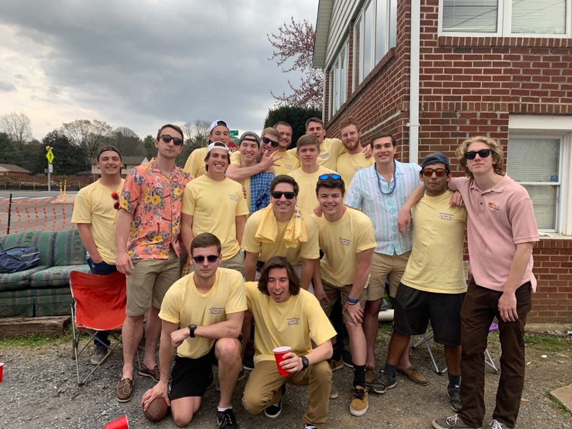
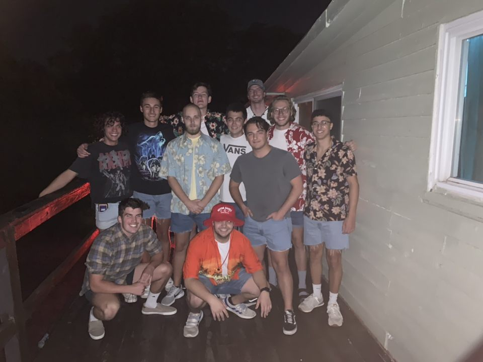
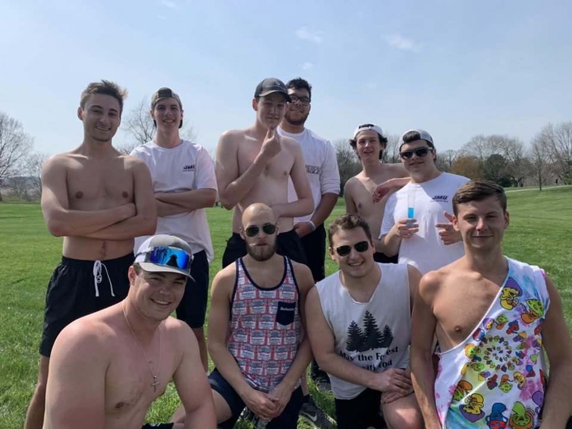

Our team is a diverse group of guys coming from all across Virginia and Maryland, from Richmond to Arlington
to the Delmarva to the beachfront.
We also have a wide variety of student majors on our team from psychology to physics to business to computer
science.
As a team we also like to hangout outside of the pool weather that be our annual formal with the women's
team to our annual barbecue fundraiser for the team.
Before the Covid-19 pandemic hit we also did Wednesday lunch at D-hall, where you could always find someone
from the team eating or studying in D-hall, as well
some Saturdays we will go to Purcell Park and play kickball with the girls team.
Our current executives are Danilo Lemaic as our president, CJ Reed as our Vice President, Cameron Bishop as
our Secretary, and finally Will Mitchell as our treasurer.
These roles also come with some very important responsibilities suchs as our president is our representative
for our water polo league and is in contact with the presidents of all the other teams club presidents.
The vice president is responsible for scheduling and running practices, and planning our housing situation
for our tournaments with the treasurer.
The secretary is our team representative to JMU and is responsible for attending the student organization
night every year.
The treasurer is obviously responsible for collecting dues from every player, which is about 200-300 dollars
per person, and making sure we have enough money to pay our water polo league dues.

Team at annual formal.
Team at annual barbecue.
Team at random team gathering.
Team at meeting at Purcell park to play kickball.